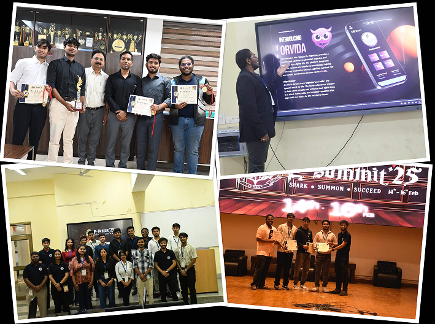

Student Achievements |

A group of Students Secured 1st place at E-summt-2025 IIIT Naya Raipur
Computer Science Engineering (CSE)
2020
- S. Arvind and Anshika Jain (2nd Year CSE), under the guidance of Dr. Nidhi Lal and Dr. Mayuri Digalwar, Assistant Professors in the Department of CSE, published a paper titled "Insurance Claim Prediction Approach Using Machine Learning based Logistic Regression" in the IEEE International Conference on Measurement, Instrumentation, Control and Automation (ICMICA 2020), held from April 2-4, 2020, at NIT Kurukshetra.
- Varun Shirbhayye, Deepesh Kurmi, Siddharth Dyavanapalli, and A. Sai Hari Prasad (2nd Year CSE), under the guidance of Dr. Nidhi Lal, published a paper titled "An Accurate Prediction of MPG (Miles Per Gallon) using Linear Regression Model of Machine Learning" in the 2020 International Conference on Computer Communication and Informatics (ICCCI), IEEE, 2020.
- Apurv Chandel (2nd Year CSE) and Aniruddha Gawate and Sahil Kesharwani (4th Year ECE) published a paper titled "Economic Ramification Due To COVID-19," available at SSRN 3598972 (2020).
- Apurv Chandel (2nd Year CSE) published a paper titled "An Accurate Estimation of Interstate Traffic of Metro City Using Linear Regression Model of Machine Learning," available at SSRN 3598310 (2020).
- Montu Saw, Tarun Saxena, Sanjana Kaithwas, and Rahul Yadav (2nd Year CSE), under the guidance of Dr. Nidhi Lal, published a paper titled "Estimation of Prediction for Getting Heart Disease Using Logistic Regression Model of Machine Learning" in the 2020 International Conference on Computer Communication and Informatics (ICCCI), IEEE, 2020.
- Kumar Akash, Aniket Verma, Gandhali Shinde, and Yash Sukhdeve (2nd Year CSE), under the guidance of Dr. Nidhi Lal, published a paper titled "Crime Prediction Using K-Nearest Neighboring Algorithm" in the 2020 International Conference on Emerging Trends in Information Technology and Engineering (ic-ETITE), IEEE, 2020.
- P. S. M. Keerthana, Nimish Phalinkar, Riya Mehere, and K. Bhanu Prakash Reddy (2nd Year CSE), under the guidance of Dr. Nidhi Lal, published a paper titled "A Prediction Model of Detecting Liver Diseases in Patients using Logistic Regression of Machine Learning," available at SSRN 3562951 (2020).
- Mr. Ankit Barai (3rd Year CSE), along with Dr. Jitendra V. Tembhurne, Assistant Professor, Department of CSE, was selected for Stage-2 of SAMHAR-COVID19 Hackathon 2020.
- Mr. Sunny Dhoke (Final Year CSE) was selected for Google Summer of Code – R Project for Statistical Computing – 2020.
- Tarun Saxena, Gandhali Shinde, Nitesh Yadav, and Prince Anuragi (2nd Year CSE), under the guidance of Dr. Mayuri A. Digalwar, developed a mobile app "COWAR" on COVID-19 - 2020.
- Mayur Selukar, Kunal Yelne, Sanket Sinha, and Vaibhav Agasti (4th Year CSE) published a paper titled "Application of Mathematical Models in Food Science and Biomass Production" in "Mathematics and Its Connections to Real World," Kindle Direct Publishing, 2020.
- Divyesh Saglani, Aman Kumar, and Braj Kishor (4th Year CSE) published a paper titled "A Study on Relation of Mathematics and Music" in "Mathematics and Its Connections to Real World," Kindle Direct Publishing, 2020.
- Aayesha Bassy, Rinisha Gedam, Prachita Kotangale, and Vaidehi Ghime (4th Year CSE), along with Dr. Kousik Das, published a paper titled "Golden Ratio: A Beauty of Mathematics" in "Mathematics and Its Connections to Real World," Kindle Direct Publishing, 2020.
- Avishkar Zade, Atharv Daflapurkar, Sanket Kale, and Tejas Tidke (4th Year CSE), along with Dr. Rupkumar Mahapatra, published a paper titled "Mathematics in Nature" in "Mathematics and Its Connections to Real World," Kindle Direct Publishing, 2020.
- Mr. Aditya Sher and Mr. Sourav Singh (3rd Year IIIT, Nagpur), with Team name “X-LABS,” won First Prize at Hackathon - 2020, Hyderabad.
2019
- Congratulations to Team "THE TERRIFYING NIGHTMARES" for Winning the 1st Prize at Smart India Hackathon – 2019.
- Vaibhav H. Agasti (Final Year CSE) is pursuing an internship at Muma College of Business, University of South Florida – 2019.
- Ankit Khushal Barai (3rd Year CSE) published the paper titled "NSE Stock prediction-Deep learning way" in SoCTA 2019.
- Ankit Khushal Barai (3rd Year CSE) published the paper titled "Drone video management systems" in HiPC 2019.
- Apurv Chandel (2nd Year CSE), under the guidance of Dr. Kirti Dorshetwar, Assistant Professor in Dept. of BS, published a paper titled "Media as a Social Need" in the International Journal of Innovative Technology and Exploring Engineering (IJITEE), September 2019
- Vaibhav Agasti (4th Year CSE), under the guidance of Dr. Robin Singh Bhadoria, published the paper titled "The Paradigms of Blockchain Technology: Myths, Facts & Future" in the International Journal of Information Systems and Social Change (IJISSC), IGI Global, April 2019.
- Atharva Nimbalkar published a chapter on the Application of Blockchain into IoT networks for Security in a reference book by Springer Publications – 2019.
2018
- Mr. Vaibhav Agasthi (CSE) was selected in the Under-19 Vidarbha Chess Team – 2018.
- Parth Wazurkar (CSE) was selected as a developer intern in Google Summer of Code – 2018.
- Anushri Laddha (CSE) was the finalist at the Master Orator Championship organized by the International Toastmasters Organization – 2018.
2017
- Parth Wazurkar co-authored a research paper on "Predictive Analytics in Data Science for Business Intelligence Solutions" in the IEEE conference CSNT – 2017.
Electronics and Communication Engineering (ECE)
2020
-
]
- Shivani Dhok, Varad Pimpalkhute, and Ambarish Chandurkar (3rd Year ECE), under the guidance of Dr. Ankit Bhurane, Dr. Manish Sharma, and Dr. U Rajendra Acharcya, published a paper titled "Automated phase classification in cyclic alternating patterns in sleep stages using Wigner–Ville Distribution based features" in Computers in Biology and Medicine, 2020. DOI: https://doi.org/10.1016/j.compbiomed.2020.103691. SCI.
- Sahil Kesharwani (2nd Year ECE) developed an Android app "COVID CARE" under the mentorship of Dr. Anuradha Singh and Dr. Kirti Dorshetwar – 2020.
- Kartik W. Kinge (Final Year ECE) developed an Augmented Reality application "SoDi" to help people visualize proper social distancing – 2020.
- Kartik W. Kinge (Final Year ECE) participated in MIT Reality Hack 2020 held at Massachusetts Institute of Technology, Cambridge, USA.
- Aditya Sher and Sourav Singh (3rd Year IIIT, Nagpur), with Team name "X-LABS," won First Prize at Hackathon - 2020, Hyderabad.
- Kritika Dhawale (4th Year ECE), under the guidance of Chitra Dhawale, published a paper titled "Current Trends in Deep Learning Frameworks With Opportunities and Future Prospectus" in "Neural Networks for Natural Language Processing," IGI Global, 2020.
2019
- Shivani Dhok (3rd Year ECE), under the guidance of Dr. Ankit Bhurane, Head and Assistant Professor, Department of ECE, published a paper titled "Diagnosis of Parkinson's Disease from EEG signals using Linear and Self-Similarity features" in Experts System (Special Issue paper), November 2019. DOI: https://doi.org/10.1111/exsy.12472.
- Kritika Dhawale (4th Year ECE), under the guidance of Rakesh Kumar, Manish Sharma, and Gaurav Singal from Bennett University, Greater Noida, published a paper titled "Deep Learning Frameworks: Current Trends, Opportunities and Future Prospectus" in I2CN-2019, 2019 IEEE 9th.